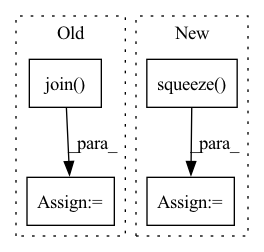

Pattern ID :16491
Before Change
// 在data的英文数据长度上遍历下标
for i in range(len(data.dev_en)):
// TODO: 打印待翻译的英文句子
en_sent = " ".join( [data.en_index_dict[w] for w in data.dev_en[i]])
print("\n" + en_sent)
// TODO: 打印对应的中文句子答案
After Change
// 设置attention mask
src_mask = (src != 0).unsqueeze(-2)
// 用训练好的模型进行decode预测
decode_result = greedy_decode(model, src, src_mask,
max_len=config.max_len).squeeze() .tolist()
// 模型翻译结果解码
translation = sp_chn.decode_ids(decode_result)
trg.append(cn_sent[i])
In pattern: SUPERPATTERN
Frequency: 5
Non-data size: 4
Instances Fragment ID: 55418476
Project Name: hemingkx/chinesenmt
Commit Name: 9adf53cb6d9b875c9d173643a8d266d49d6f90eb
Time: 2020-12-15
Author: hemingkx@gmail.com
File Name: train.py
M Class Name: AnonimousClass
N Class Name: AnonimousClass
M Method Name: evaluate(2)
N Method Name: evaluate(2)
M Parent Class:
N Parent Class:
M File Name: train.py
N File Name: train.py
M Start Line: 53
M End Line: 84
N Start Line: 67
N End Line: 95
Before Change
w = StopWatch("main")
home = os.getenv("HOME")
data_dir = osp.join(home, ".pyg")
root = osp.join( data_dir, "data", "products")
dataset = PygNodePropPredDataset("ogbn-products", root)
split_idx = dataset.get_idx_split()
evaluator = Evaluator(name="ogbn-products")
data = dataset[0]
After Change
model = model.to(device)
x = dataset.x.to(device) // [N, 100]
y = dataset.y.squeeze() .to(device) // [N, 1]
w.tick("build model")
@torch.no_grad() Fragment ID: 55418479
Project Name: quiver-team/torch-quiver
Commit Name: 58f8f5d4369289c4cf837f20fd75e71012478bff
Time: 2021-07-26
Author: zenotan1998@gmail.com
File Name: benchmarks/ogbn_products_sage/cuda.py
M Class Name: AnonimousClass
N Class Name: AnonimousClass
M Method Name: main(0)
N Method Name: main(0)
M Parent Class:
N Parent Class:
M File Name: benchmarks/ogbn_products_sage/cuda.py
N File Name: benchmarks/ogbn_products_sage/cuda.py
M Start Line: 41
M End Line: 77
N Start Line: 51
N End Line: 83
Before Change
minx, maxx, miny, maxy, mint, maxt = query
query_box = shapely.geometry.box(minx, miny, maxx, maxy)
with rasterio.open(os.path.join( self.root, naip_fn) ) as f:
dst_crs = f.crs.to_string().lower()
query_box_transformed = shapely.ops.transform(
self.p_transformers[dst_crs], query_box
).envelope
query_geom_transformed = shapely.geometry.mapping(query_box_transformed)
naip_data, _ = rasterio.mask.mask(
f, [query_geom_transformed], crop=True, all_touched=True
)
After Change
f, [query_geom_transformed], crop=True, all_touched=True
)
sample[layer] = data.squeeze()
else:
raise IndexError(f"query: {query} spans multiple tiles which is not valid")
Fragment ID: 55418494
Project Name: microsoft/torchgeo
Commit Name: 082dcac8d7c8c5eabfc298bdc9ef96c897271975
Time: 2021-09-03
Author: calebrob6@gmail.com
File Name: torchgeo/datasets/cvpr_chesapeake.py
M Class Name: CVPRChesapeake
N Class Name: CVPRChesapeake
M Method Name: __getitem__(2)
N Method Name: __getitem__(2)
M Parent Class: GeoDataset
N Parent Class: GeoDataset
M File Name: torchgeo/datasets/cvpr_chesapeake.py
N File Name: torchgeo/datasets/cvpr_chesapeake.py
M Start Line: 145
M End Line: 177
N Start Line: 152
N End Line: 189
Before Change
frames.append(data)
print("录音已结束!")
audio_data = b"".join( frames)
if save_path is not None:
os.makedirs(os.path.dirname(save_path), exist_ok=True)
wf = wave.open(save_path, "wb")
wf.setnchannels(self.channels)After Change
print("开始录音......")
num_frames = int(record_seconds * self.sample_rate)
data = self.default_mic.record(samplerate=self.sample_rate, numframes=num_frames, channels=self.channels)
audio_data = data.squeeze()
print("录音已结束!")
if save_path is not None:
os.makedirs(os.path.dirname(save_path), exist_ok=True)
soundfile.write(save_path, data=data, samplerate=self.sample_rate) Fragment ID: 55418484
Project Name: yeyupiaoling/audioclassification-pytorch
Commit Name: 4e40d2876f4e146adf88a406af712366ff36d830
Time: 2023-03-23
Author: yeyupiaoling@foxmail.com
File Name: macls/utils/record.py
M Class Name: RecordAudio
N Class Name: RecordAudio
M Method Name: record(3)
N Method Name: record(3)
M Parent Class:
N Parent Class:
M File Name: macls/utils/record.py
N File Name: macls/utils/record.py
M Start Line: 31
M End Line: 45
N Start Line: 24
N End Line: 30
Before Change
frames.append(data)
print("录音已结束!")
audio_data = b"".join( frames)
if save_path is not None:
os.makedirs(os.path.dirname(save_path), exist_ok=True)
wf = wave.open(save_path, "wb")
wf.setnchannels(self.channels)After Change
print("开始录音......")
num_frames = int(record_seconds * self.sample_rate)
data = self.default_mic.record(samplerate=self.sample_rate, numframes=num_frames, channels=self.channels)
audio_data = data.squeeze()
print("录音已结束!")
if save_path is not None:
os.makedirs(os.path.dirname(save_path), exist_ok=True)
soundfile.write(save_path, data=data, samplerate=self.sample_rate) Fragment ID: 55418470
Project Name: yeyupiaoling/voiceprintrecognition-pytorch
Commit Name: 5c4517b82c3634a6908e35f143fb908e35fd71d8
Time: 2023-03-23
Author: yeyupiaoling@foxmail.com
File Name: mvector/utils/record.py
M Class Name: RecordAudio
N Class Name: RecordAudio
M Method Name: record(3)
N Method Name: record(3)
M Parent Class:
N Parent Class:
M File Name: mvector/utils/record.py
N File Name: mvector/utils/record.py
M Start Line: 31
M End Line: 45
N Start Line: 24
N End Line: 30